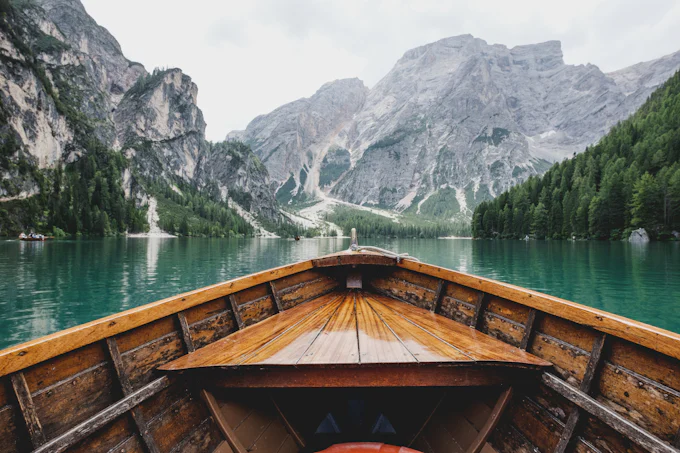

Intuitive Stateroom & Suite Service
Trained in the time-honored traditions of the British Butler Guild, our suite attendants provide an unmatched level of intuitive care. From unpacking your steamer trunks to drawing evening bath rituals infused with Mediterranean sea salts, your comfort is seamlessly orchestrated.
Your dedicated butler coordinates in-suite private dining, reserves cabanas at each port club, ensures your preferred morning newspaper is printed, and chills your favorite champagne vintage to the precise cellar temperature.
Explore Butler PrivilegesPrivate Aviation & Executive Chauffeur Desks
We eliminate the friction of travel by managing your entire journey from your front doorstep to the vessel's gangway.
Private Aviation Concierge
Charter flights on Bombardier Global and Gulfstream jets connecting directly to coastal ports, with expedited tarmac immigration clearance.
Aviation DeskMaybach Chauffeur Fleet
Chauffeured Mercedes-Maybach and executive electric vans greeting you at arrivals and escorting your party directly to the ship's private pier.
Chauffeur DetailsWhite-Glove Luggage Forwarding
Door-to-suite luggage valet dispatches your wardrobe directly from your home address into your stateroom closet prior to boarding.
Luggage ForwardingShore Expeditions Limited to 8–12 Guests
Unlike mass cruise lines that dispatch dozens of tour buses to crowded tourist destinations, Aurelia shore excursions are strictly intimate. Accompanied by local historians, sommeliers, and marine biologists, you unlock private access to closed world treasures.
Savor private tastings inside family-owned cellars in Tuscany, enjoy after-hours access to the Doge's Palace in Venice, or charter private wooden gulets along Turkey's Turquoise Coast.
Browse Curated Excursions
Thalassa Thermal Spa & Wellness Sanctuary
Harnessing the restorative powers of marine trace minerals, seaweed extracts, and seawater vitality pools.
Vitality Hydrotherapy Pools
Multi-jet heated seawater circuit improving circulation and easing muscular tension under skylit ocean ceilings.
Explore TreatmentsCryotherapy & Nordic Saunas
Full-spectrum Finnish panoramic sea saunas paired with sub-zero cryotherapy chambers for cellular longevity.
Explore TreatmentsBiologique Recherche Facials
Targeted botanical and marine skincare protocols performed by certified European aesthetic therapists.
Explore TreatmentsJunior Navigators Marine Academy
Designed for multi-generational families, our Junior Navigators program turns the ocean into a living classroom. Led by certified marine biologists and navigators, children explore celestial sextant reading, coral reef ecology, and ocean current mapping.
Our dedicated family suites feature sound-dampened interconnecting rooms, child-safe terrace gates, bespoke children's degustation dining, and 24/7 certified nanny care for private parental evenings.
Family Services Catalog
Vow Renewals, Anniversaries & Private Receptions
Celebrate significant life milestones framed by boundless ocean horizons. Our onboard Event Director coordinates romantic vow renewals presided over by the Ship's Captain on the teak bow, followed by champagne receptions and bespoke fireworks displays over private waters.
Couples enjoy private sunset dinners on secluded beaches, couples' massage treatments in private ocean cabanas, and vintage Dom Pérignon champagne tastings delivered to their suite veranda.
Plan a Special Occasion
Ice-Class 1A Expedition Support & Gear
Navigating remote high-latitude arctic and antarctic waters with commercial Zodiac fleets and certified ice masters.
Commercial Zodiac Fleet
Quick-deploy military-grade inflatable craft accessing secluded glacial bays and penguin rookeries.
Expedition FleetBespoke Polar Parka Fitting
Complimentary custom Aurelia expedition parkas, waterproof boots, and thermal binoculars in each suite.
Gear InclusionsGlacial Sea Kayaking
Glide silently through iceberg arches under the supervision of world-champion sea kayak guides.
Kayaking ProgramComprehensive Medical Facilities & Purser Desk
Every Aurelia vessel features an accredited maritime medical center staffed around the clock by board-certified emergency medicine physicians and critical care nurses, equipped with digital radiography and satellite telemedicine links to top European university hospitals.
Our Purser Desk manages international currency exchanges, confidential courier dispatch, secure stateroom safes, and global Starlink high-speed satellite connectivity with zero drop-offs.
Review Medical & Safety Protocols
Four Steps to Your Tailored Voyage
How our private concierge team orchestrates your personalized seafaring experience.
Private Consultation
We consult on suite views, dietary desires, and favorite regional pastimes.
Itinerary Tailoring
Curated shore guides, private flights, and sommelier cellar requests confirmed.
Pre-Cruise Valet
Luggage forwarded, private chauffeur dispatched, and digital boarding pass issued.
Seamless Embarkation
Step aboard to champagne, unpacked garments, and breathtaking open ocean vistas.
Speak With an Aurelia Private Voyage Specialist
Allow our team to tailor an itinerary that matches your personal standard of luxury.